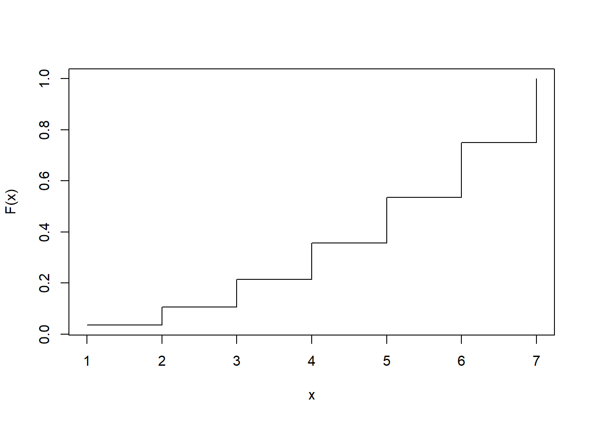

9 Esercitazione 9
9.1 Esercizio 1
Sia data una v.c. \(X\) discreta la cui funzione di probabilità è \[f(x)=\begin{cases}ax,\quad\quad x=1,2,…,7\\0,\,\,\,\,\quad\quad\mathrm{altrove}\end{cases}\]- Si calcoli il valore assunto da \(a\) e si tracci il grafico di \(f(x)\).
- Si ricavi la funzione di ripartizione e la si rappresenti graficamente.
- Si determinino i quartili e li si riconosca sul grafico di \(F(x)\).
- Si calcolino \(E(X)\) e \(Var(X)\).
- Si calcoli \(P(X\geq3│X\leq6)\).
9.2 Esercizio 2
Data la funzione \[f(x)=\begin{cases}\frac{1}{2}-ax,\quad\quad x=1,2,…,5\\0,\quad\quad\quad\quad\,\,\,\,\mathrm{altrove}\end{cases}\]
- Si determini il valore di \(a\) che rende questa funzione una funzione di probabilità per una variabile casuale discreta \(X\) e la si rappresenti graficamente.
- Si calcolino \(E(X)\) e \(Var(X)\).
- Si ricavi la funzione di ripartizione \(F(x)\) e se ne rappresenti il grafico.
- Si calcolino i quartili e li si riconosca sul grafico.
9.3 Esercizio 3
Sia data la funzione \[F(x)=\begin{cases}0,\quad\quad\,\, x<1\\0.2a,\quad 1\leq x<2\\0.5a,\quad 2\leq x<4\\0.6a,\quad4\leq x<7\\0.8a,\quad x\geq7\end{cases}\]
- Si determini il valore di a che rende \(F(x)\) una funzione di ripartizione per una variabile casuale discreta \(X\).
- Si ricavi la funzione di ripartizione di \(X\) e se ne tracci il grafico.
- Si determinino \(E(X)\) e \(Var(X)\).
- Si calcolino i quartili.
9.4 Esercizio 4
Sia data la seguente funzione \[f(x)=\begin{cases}-\frac{1}{2}x+\frac{1}{2}, & 0\leq x<1\\x-1, &1\leq x\leq a\\0,&\mathrm{altrove} \end{cases}\]
- Si determini il valore di a che fa in modo che \(f(x)\) possa essere considerata una funzione di densità e se ne tracci il grafico.
- Si determini la funzione di ripartizione \(F(x)\) e se ne tracci il grafico.
- Si determinino quartili e li si riconoscano sui grafici di \(f(x)\) e di \(F(x)\).
- Si ricavino \(P(1<X<2)\) e \(P(X<1.5│X<2)\).
Soluzioni
Esercizio 1
-
\[a\cdot(1+2+3+4+5+6+7)=1\] \[a\cdot28=1\] \[a=\frac{1}{28}\]
\(x\) 1 2 3 4 5 6 7 \(f(x)\) 0.0357 0.0714 0.1071 0.1429 0.1786 0.2143 0.25 # E1 rm(list = ls()) # a sum(1:7)## [1] 28plot(1:7/28, type = "h", xlab = "x", ylab = "f(x)") -
\(x\) 1 2 3 4 5 6 7 \(F(x)\) 0.0357 0.1071 0.2143 0.3571 0.5357 0.75 1 # b plot(cumsum(1:7) / 28, type = "s", xlab = "x", ylab = "F(x)")
- La prima probabilità cumulata che supera 0.25 si osserva con 4, la prima probabilità cumulata che supera 0.5 si osserva con 5, la prima probabilità cumulata che supera o è uguale a 0.75 si osserva con 6. Per il terzo quartile possiamo prendere 6 o il valore che sta in mezzo a 6 e 7, ovvero 6.5
-
\(x\) 1 2 3 4 5 6 7 Totale \(f(x)\) 0.0357 0.0714 0.1071 0.1429 0.1786 0.2143 0.25 1 \(x\cdot f(x)\) 0.0357 0.1429 0.3214 0.5714 0.8929 1.2857 1.75 5 \(x^2\cdot f(x)\) 0.0357 0.2857 0.9643 2.2857 4.4643 7.7143 12.25 28 \[\mu=E(X)=5\] \[E(X^2)=28\] \[\sigma^2=Var(X)=E(X^2)-E(X)^2=28-5^2=28-25=3\]
# d sum(1:7 * 1:7 / 28)## [1] 5sum((1:7)^2 * 1:7 / 28)## [1] 28sum((1:7)^2 * 1:7 / 28) - sum(1:7 * 1:7 / 28)^2## [1] 3(sum((1:7)^2 * 1:7 / 28) - sum(1:7 * 1:7 / 28)^2)^0.5## [1] 1.732051 -
\[\begin{align*}P(X\geq3│X\leq6) & =\frac{P(3\leq X\leq6)}{P(X\leq6)} =\frac{P(X\leq6)-P(X<3)}{P(X\leq6)} =\frac{F(6)-F(2)}{F(6)} =\\ & =\frac{0.75-0.1071}{0.75}=\frac{0.6429}{0.75}=0.8571\end{align*}\]
Notare: \[\begin{align*}1-\frac{F(2)}{F(6)} & = 1-\frac{P(X\leq2}{P(X\leq6)} = 1-\frac{P(X\leq2\cap X\leq6)}{P(X\leq6)} =\\ & = 1-P(X\leq2│X\leq6)=1-P(X<3|X\leq6)\end{align*}\]
Esercizio 2
-
\[\sum_{i=1}^5\left(\frac{1}{2}-a\cdot i\right) =1\] \[\frac{5}{2}-a\sum_{i=1}^5 i =1\] \[\frac{5}{2}-a\cdot15=1\] \[-a\cdot 15=1-\frac{5}{2}\] \[a\cdot15=\frac{3}{2}\] \[a=\frac{3}{2\cdot15}=\frac{1}{10}\]
\(x\) 1 2 3 4 5 \(f(x)\) 0.4 0.3 0.2 0.1 0 # E2 rm(list = ls()) # a sum(1:5)## [1] 15sum(0.5 - 1:5 / 10)## [1] 1plot(0.5 - 1:5 / 10, type = "h", xlab = 'x', ylab = "f(x)") -
\(x\) 1 2 3 4 5 Totale \(f(x)\) 0.4 0.3 0.2 0.1 0 1 \(x\cdot f(x)\) 0.4 0.6 0.6 0.4 0 2 \(x^2\cdot f(x)\) 0.4 1.2 1.8 1.6 0 5 \[\mu=E(X)=2\] \[\sigma^2=E(X^2)-E(X)^2=5-2^2=1\]
# b sum(1:4*(0.5 - 1:4 / 10))## [1] 2sum((1:4)^2*(0.5 - 1:4 / 10))## [1] 5 -
\(x\) 1 2 3 4 5 \(F(x)\) 0.4 0.7 0.9 1 1 # c plot(cumsum(0.5-1:5/10), ylim = c(0, 1), type = "s", xlab = "x", ylab = "F(x)")
- La prima probabilità cumulata che supera 0.25 è in corrispondenza di 1, che supera 0.5 è in corrispondenza di 2, che supera 0.75 è in corrispondenza di 0.75.
Esercizio 3
-
\[0.8a=1\] \[a=\frac{1}{0.8}=1.25\]
\(x\) 1 2 4 7 \(F(x)\) 0.25 0.625 0.75 1 # E3 rm(list = ls()) # a 1/0.8## [1] 1.25c(0.2, 0.5, 0.6, 0.8)/0.8## [1] 0.250 0.625 0.750 1.000plot(c(1, 2, 4, 7), c(0.2, 0.5, 0.6, 0.8)/0.8, ylim = c(0, 1), type = "s", xlab = "x", ylab = "F(x)") -
\(x\) 1 2 4 7 \(f(x)\) 0.25 0.375 0.125 0.25 # b Fx <- c(0.2, 0.5, 0.6, 0.8)/0.8 f <- c(0.25, Fx[-1] - Fx[-4]) f## [1] 0.250 0.375 0.125 0.250plot(c(1, 2, 4, 7), f, ylim = c(0, 0.375), type = "h", xlab = "x", ylab = "f(x)")
-
\[\mu=E(X)=3.25\] \[\sigma^2=E(X^2)-E(X)^2=16-10.5625=5.4375\]\(x\) 1 2 4 7 Totale \(f(x)\) 0.25 0.375 0.125 0.25 1 \(x\cdot f(x)\) 0.25 0.75 0.5 1.75 3.25 \(x^2\cdot f(x)\) 0.25 1.5 2 12.25 16 - La cumulata che è uguale a 0.25 corrisponde a 1 ed è tale fino a 2, quindi il primo quartile viene fissato pari a 1.5, la mediana è pari a 2, il terzo quartile è pari è compreso tra 4 e 7 (5.5).
Esercizio 4
-
\[\begin{align*} \int_{-\infty}^{+\infty}f(x)dx &= \int_0^1-\frac{1}{2} x+\frac{1}{2} dx+\int_1^ax-1 dx=\\ & = \left[-\frac{1}{2} \left(\frac{x^2}{2}\right)+\frac{1}{2} x\right]_0^1+\left[\frac{x^2}{2}-x\right]_1^a=\\ & = \left[-\frac{1}{4}+\frac{1}{2}\right]+\left[\frac{a^2}{2}-a\right]-\left[\frac{1}{2}-1\right]=\frac{1}{4}+\frac{a^2}{2}-a+\frac{1}{2}= \\ & = \frac{1}{2} a^2-1\cdot a+\frac{3}{4}:=1\end{align*}\] \[\frac{1}{2} a^2-1\cdot a-\frac{1}{4}=0\] \[a=\frac{-(-1)\pm \sqrt{(-1)^2-4\left[\frac{1}{2} \left(-\frac{1}{4}\right)\right] }}{(2(-1)}=1\pm\sqrt{\frac{3}{2}}=1\pm 1.2247=\begin{cases}-0.2247<1 &\mathrm{NO} \\ 2.2247 &\mathrm{SÌ}\end{cases}\]
# E4 #a f <- Vectorize(function(x) { if (x < 0 | x >= 1 + (3/2)^0.5) return(0) if (x < 1) return(-1/2*x+1/2) if (x < 1 + (3/2)^0.5) return(x - 1) }) plot(f, from = -1, to = 3, n = 10001, ylab = "f(x)")
-
\[F(x)=\int_{-\infty}^xf(t)dt\]
In \([0,1)\) \[\int_0^x-\frac{1}{2} t+\frac{1}{2} dt=\left[-\frac{1}{4} t^2+\frac{1}{2} t\right]_0^x=-\frac{1}{4} x^2+\frac{1}{2} x\] \[\lim_{x\rightarrow1^-} F(x)=-\frac{1}{4}+\frac{1}{2}=\frac{1}{4}=0.25\]
In \([1, 2.2247)\) \[F(1)+\int_1^xt-1\,\, dt=\frac{1}{4}+\left[\frac{1}{2} t^2-t\right]_1^x=\frac{1}{4}+\frac{1}{2} x^2-x-\frac{1}{2}+1=\frac{1}{2} x^2-x+\frac{3}{4}\] \[F(1)=\frac{1}{4}=0.25\] \[F\left(1+\sqrt{\frac{3}{2}}\right)=F(2.2247)=1\]
# b Fx <- Vectorize(function(x) { if (x < 0) return(0) if (x < 1) return(-1/4*x^2+1/2*x) if (x < 1 + (3/2)^0.5) return(1/2*x^2-x+3/4) return(1) }) plot(Fx, from = -1, to = 3, n = 10001, ylab = "F(x)") -
Il primo quartile corrisponde con 1, il secondo quartile è maggiore di 1, quindi \[\frac{1}{2} x^2-x+\frac{3}{4}=\frac{2}{4}\] \[\frac{1}{2} x^2-x+\frac{1}{4}=0\] \[x=\frac{(-1)\pm\sqrt{(-1)^2-4 \frac{1 }{2}\frac{1}{4} }}{2(-1)} =1\pm\frac{1}{\sqrt{2}}\]
# c 1+1/sqrt(2)## [1] 1.707107Il caso “sottrazione” lo escludiamo perché sappiamo che dev’essere maggiore di 1, quindi la mediana è pari a 1.7071. Il terzo quartile è pari a \[frac{1}{2} x^2-x+\frac{3}{4}=\frac{3}{4}\] \[\frac{1}{2} x^2-x=0\] Escludiamo la soluzione nulla \[\frac{1}{2} x-1=0\] \[\frac{1}{2} x=1\] \[x=2\]